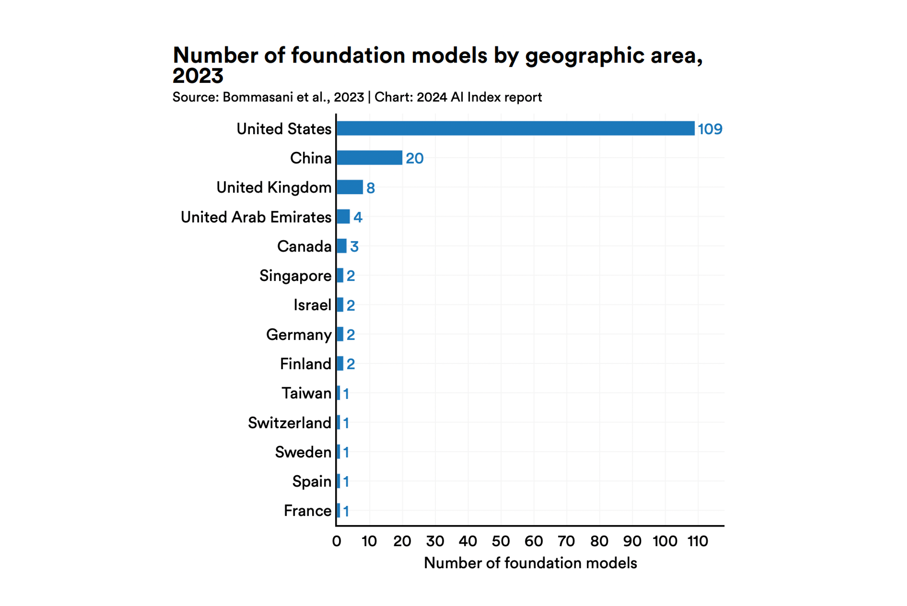
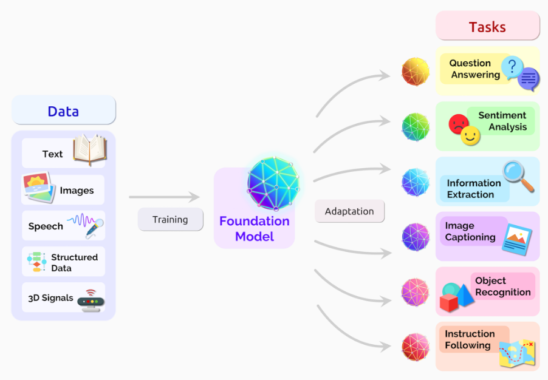

The AI index report 2024
미국의 스탠퍼드 대학교에 HAI라는 곳이 있습니다. 이름을 풀어보면 Human-Centered Artificial Intelligence, 즉 인간중심 인공지능을 연구하는 연구시설입니다. 이곳에서는 연례적으로 AI 보고서를 공개하고 있습니다. 이름하여
올해로 벌써 7년째 이어지고 있는 이 보고서에는 AI 기술의 최신 동향과, 앞으로의 전망에 대한 내용이 총망라되어 있습니다. 현재 AI 기술 개발 상황은 어떠한지, 또 기술이 적용되고 있는 다양한 분야에서의 경제적 효과는 어떠한지 살펴볼 수 있습니다. 단순히 시장 전망만 다루는 게 아니라 사람들이 AI에 대해서 어떻게 생각하고 있는지 등 다양한 차원에서 AI의 현주소를 평가하고 있습니다.
HAI 홈페이지에 들어가면 인터랙티브 그래프와 함께 보고서를 읽을 수 있습니다.
Top 10 Takeaways
연구진들이 열과 성을 다해 만든 보고서를 찬찬히 읽어보는 것이 가장 좋겠지만 분량이 상당합니다. 무려 502페이지나 되거든요. 500 페이지가 넘는 보고서가 부담이 되는 분들이라면, HAI가 정리해 놓은 10가지 핵심 내용만 살펴보세요. 2024년 현재 AI 모델의 성능이 어디까지 왔는지, 또 이런 모델을 개발하는 데 각 국가의 상황은 어떤지 알 수 있습니다.
| No | Takeaways |
|---|---|
| 1 |
|
| 2 |
|
| 3 |
|
| 4 |
|
| 5 |
|
| 6 |
|
| 7 |
|
| 8 |
|
| 9 |
|
| 10 |
|
국내 파운데이션 모델은 ZERO?
문제가 된 것은 핵심정리 10개 중 4번째 문장인 “The United States leads China, the EU, and the U.K. as the leading source of top AI models.”입니다. 스탠퍼드 보고서에서는 전 세계 국가별로 Frontier AI 모델을 얼마나 발표했는지를 비교했는데요, 그중에서도 Frontier AI 연구를 대표할 수 있는 파운데이션 모델이 어디서 만들어졌는지를 분석했습니다. 보고서에선 미국이 109개로 가장 많다고 소개했고, 뒤이어 중국 20개, 영국 8개, UAE 4개 순이었습니다.

여기에 우리나라가 개발한 파운데이션 모델은 ZERO였죠. 이걸 가지고 다양한 기사들이 나왔습니다. AI에 투자한 게 얼만데, 아직까지 파운데이션 모델은 한 개도 못 만들었다며 비판하는 목소리가 다수였습니다. 정말일까요? 일단, 보고서에서 이야기하는 파운데이션 모델이 무엇인지부터 살펴보겠습니다.
Foundation model의 탄생
2020년 초, 새롭게 등장하는 초거대 AI 모델을 두고 학계는 고심이 많았습니다. 당시는 대규모 데이터로 학습되어 다양한 다운스트림 작업에 적용할 수 있는 BERT, DALL-E, GPT-3라는 모델들이 속속 등장하는 시기였죠. 이런 모델들은 AI의 패러다임을 전환할 수 있는 모델로 여겨졌고, 이 전환을 설명할 수 있는 모델들의 개념, 혹은 카테고리가 필요했습니다.
2021년 HAI에서는 초거대AI연구센터를 설립해 컴퓨터와 AI 관련 연구진뿐 아니라 법, 철학 등 다방면의 스탠퍼드 연구진 100여 명을 모아 보고서를 만들었습니다. 보고서의 이름은

파운데이션 모델은 이름 그대로 모든 응용 분야의 기반이 될 수 있는 모델을 의미합니다. 논문에서는 파운데이션 모델을 엄청난 규모의 원시 데이터에서 비지도 학습을 통해 훈련된 AI 신경망을 의미하고 있습니다. 다양한 양식의 데이터에서 얻은 정보를 중앙 집중화해서, 다운스트림 작업에 적용할 수 있죠.
일단 파운데이션 모델을 만들어 두면, 새로운 애플리케이션을 위해 AI 모델을 처음부터 만들 필요가 없습니다. 파운데이션 모델을 기반으로 그냥 새로운 분야에 적용하면 되니까요. 더 빠르고, 비용도 줄일 수 있습니다. 이런 강점 탓에 파운데이션 모델은 현재 매우 빠르게 진화하고 있는 인기 있는 AI 모델이라고 할 수 있습니다.
그런데 이 모델을 우리나라가 단 하나도 못 만들었다는 보고서가 발표되니 난리가 난 거죠. 그런데 정말일까요?
현실은 이렇다
네이버 Future AI 센터의 센터장은 SNS를 통해 스탠퍼드 보고서의 오류를 지적했습니다. 이번에 발표한 보고서는 과거 직접 조사한 때와 달리 HAI 그룹에서 자체적으로 작성한 논문의 내용을 활용한 탓에 상당수의 파운데이션 모델이 빠졌다는 거였죠.
실제 HAI 보고서에는 이런 단서 조항을 달아 두었습니다.
The Ecosystem Graphs make efforts to survey the global AI ecosystem, but it is possible that they underreport models from certain nations like South Korea and China.
“생태계 그래프는 전 세계 AI 생태계를 조사하기 위해 노력하고 있지만, 한국이나 중국과 같은 특정 국가의 모델을 과소 보고할 수 있습니다.”라고요.
이례적으로 과학기술정보통신부도 ’사실은 이렇습니다’를 통해 반박 자료를 발표했습니다. 네이버의 하이퍼클로바X, LG AI 연구원의 엑사원 2.0, 삼성전자의 Gauss, NC소프트의 VARCO 등 다수의 독자 파운데이션 모델을 보유하고 있다고 말이죠.